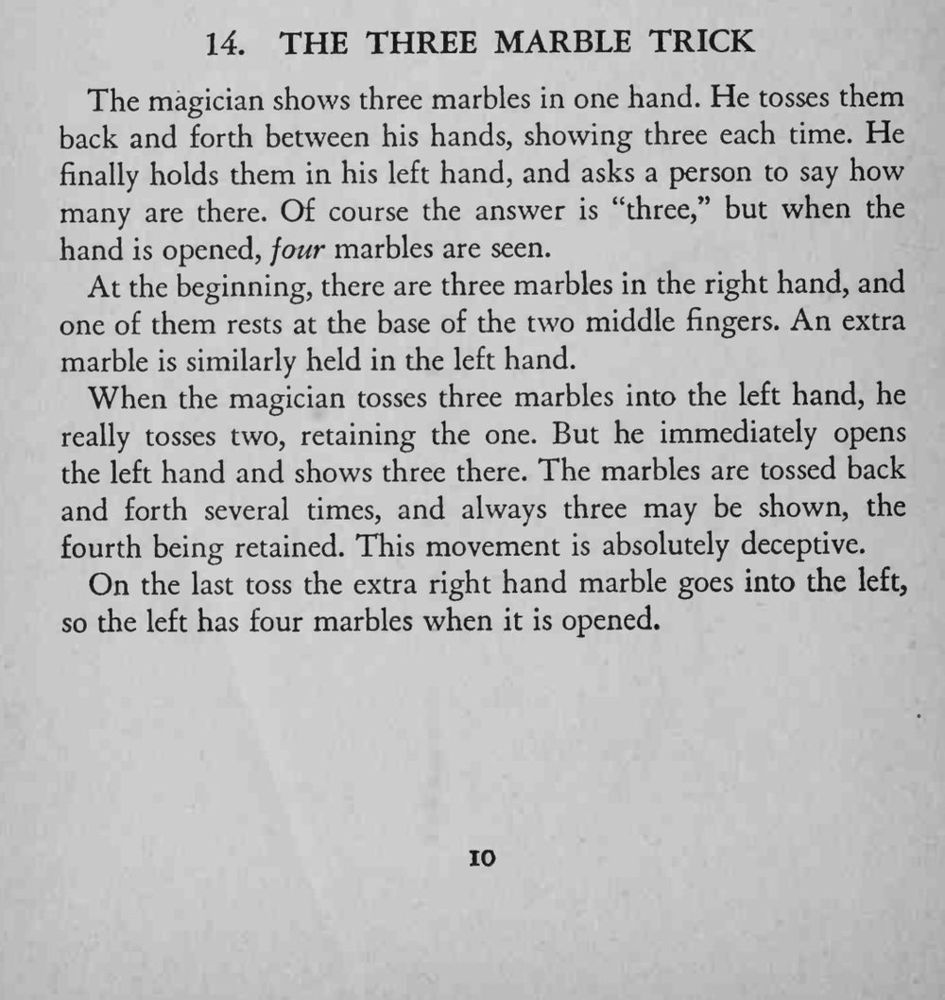
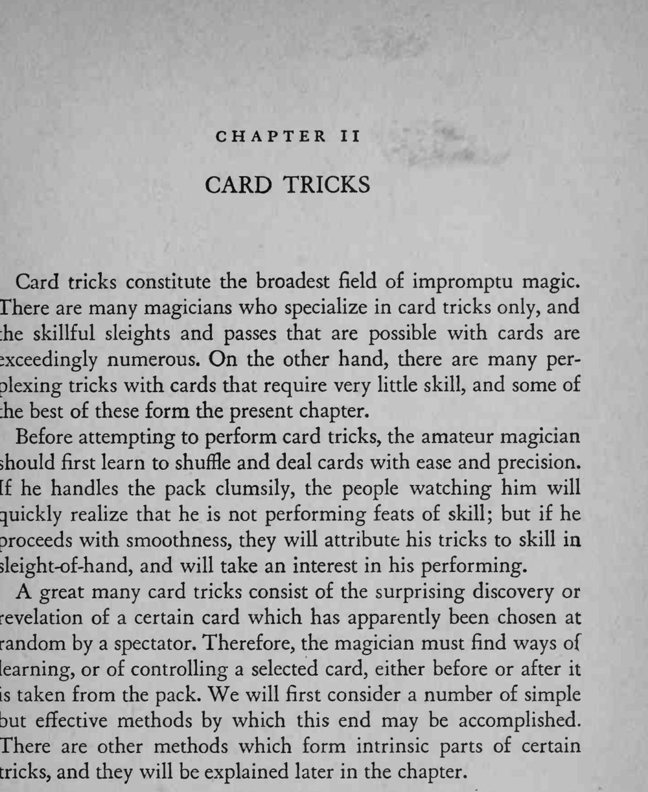

手里来来去去都只有三颗弹珠，最后张开手却变成了四颗。
抛接节奏要均匀自然，别让人看出每次落进手里的颗数不同；原文此条后接第二章纸牌魔术的导言，属章节说明，未译入本卡。


The magician shows three marbles in one hand. He tosses them back and forth between his hands, showing three each time. He finally holds them in his left hand, and asks a person to say how many are there. Of course the answer is "three," but when the hand is opened, four marbles are seen. At the beginning, there are three marbles in the right hand, and one of them rests at the base of the two middle fingers. An extra marble is similarly held in the left hand. When the magician tosses three marbles into the left hand, he really tosses two, retaining the one. But he immediately opens the left hand and shows three there. The marbles are tossed back and forth several times, and always three may be shown, the fourth being retained. This movement is absolutely deceptive. On the last toss the extra right hand marble goes into the left, so the left has four marbles when it is opened. Card tricks constitute the broadest field of impromptu magic. There are many magicians who specialize in card tricks only, and the skillful sleights and passes that are possible with cards are exceedingly numerous. On the other hand, there are many perplexing tricks with cards that require very little skill, and some of the best of these form the present chapter. Before attempting to perform card tricks, the amateur magician should first learn to shuffle and deal cards with ease and precision. If he handles the pack clumsily, the people watching him will quickly realize that he is not performing feats of skill; but if he proceeds with smoothness, they will attribute his tricks to skill in sleight-of-hand, and will take an interest in his performing. A great many card tricks consist of the surprising discovery or revelation of a certain card which has apparently been chosen at random by a spectator. Therefore, the magician must find ways of learning, or of controlling a selected card, either before or after it is taken from the pack. We will first consider a number of simple but effective methods by which this end may be accomplished. There are other methods which form intrinsic parts of certain tricks, and they will be explained later in the chapter.